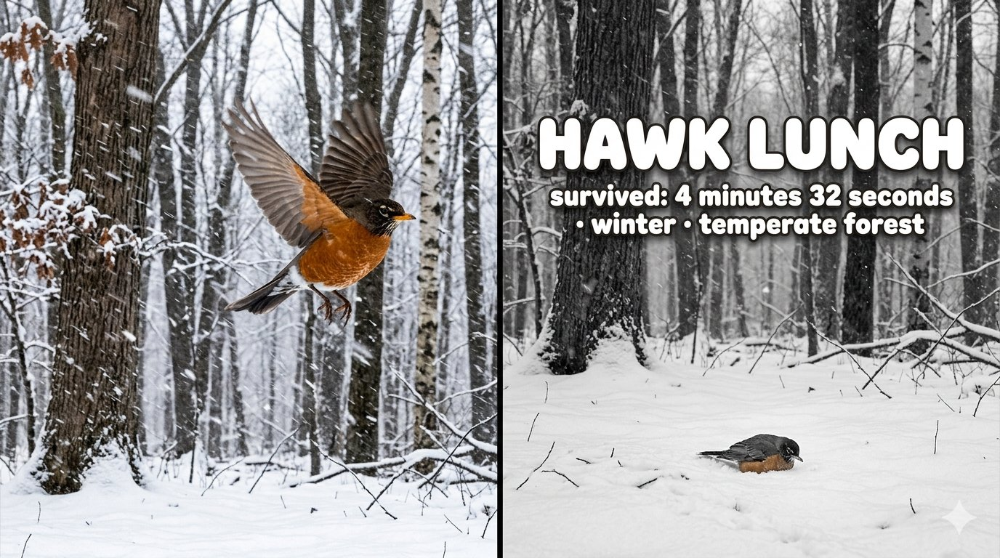
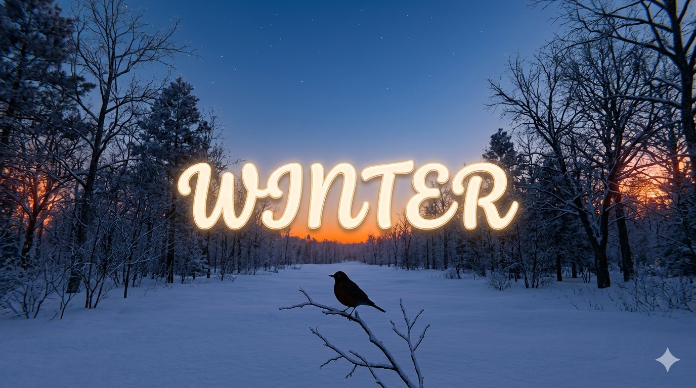
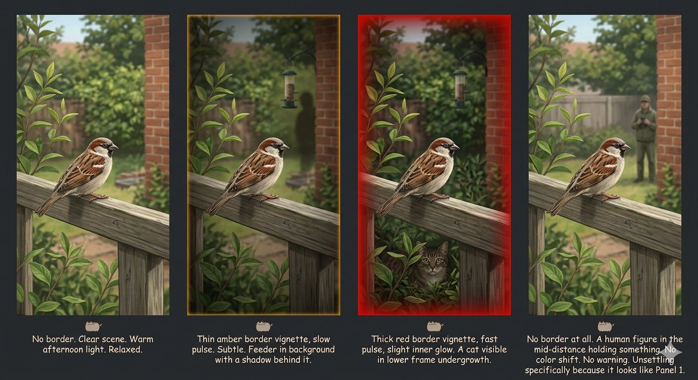
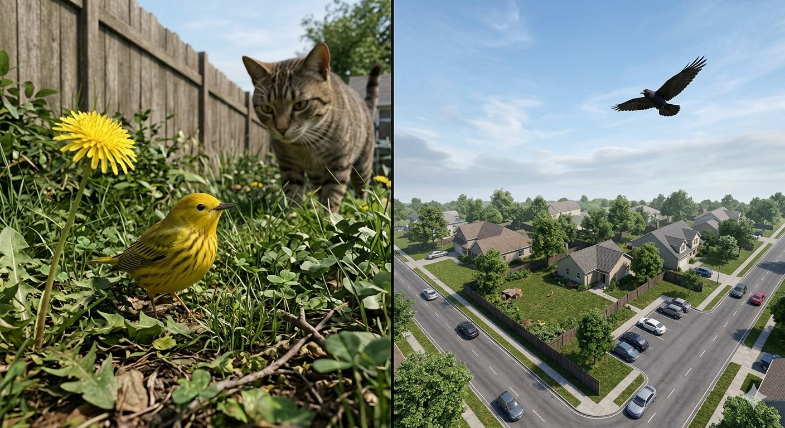
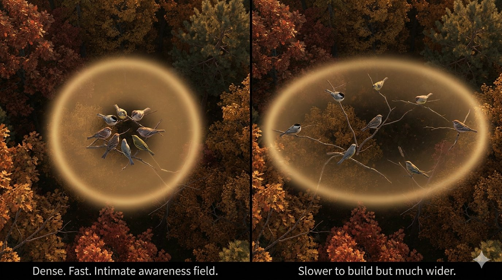

Generated from GDD v0.3 prompts. Directional reference only — not final assets. Gemini watermarks present throughout.
Composition, winter light, bokeh, and robin posture are all correct. Bird occupies lower-left third as specced; sky fills upper two-thirds. Feels appropriately vast and quiet.
Robin breast reads slightly muted — in-engine push the red. It's the only saturated element and should earn its presence more. Breath vapor visible, which was not specified but is correct and should be kept.

This is the best render of the set. Split-frame before/after lands exactly as designed. Typography is the right weight — cheerful Pusheen-style against a stark monochrome scene. The still robin in snow is peaceful, not graphic. The contrast between tone and image is intentionally wrong in the right way.
Note: right panel should be full desaturated, not merely dark — the scene has retained slight warmth in the bird's breast feathers. In-engine: full black and white, no warm bleed.

Scene and robin silhouette are perfect — the tiny bird against the vast winter sky reads exactly right. Orange horizon against deep blue is the correct palette.
Font went script/cursive rather than rounded bubble. Closer to Pusheen than expected but slightly too elegant — needs to feel rounder and friendlier, matching the death card typography weight. Glow reads electric/neon rather than warm bloom. Specify warmer inner glow, less LED.

Panel 4 is the standout and landed perfectly — human figure with no border is genuinely unsettling, looks exactly like Panel 1. This is the design working as intended.
Panel 3 cat placement is correct. Panel 2 amber border reads slightly too much like a picture frame outline rather than a screen vignette. In-engine: border should bleed inward from screen edges as a soft gradient, not sit as a hard rectangular outline. Panel 4 human should be slightly more ambiguous — a rifle is visible in this render which telegraphs danger. The point is that nothing telegraphs danger.

Warbler/cat/dandelion POV is exactly right. Claustrophobic, dense, intimate. The cat at that scale is correctly enormous and threatening. The dandelion at eye level is perfect. This side is reference-ready.
Raven side went too aerial/simulation — reads like a map rather than a felt POV. Needs more sky, lower angle, sense of the bird in flight through space rather than above it. The crow is correctly small in frame but the camera angle is wrong.

Strongest concept render of the set. Circular vs. elliptical awareness field reads immediately and intuitively. The warm gold glow quality is exactly right — environmental and organic, not UI. Autumn canopy backdrop is correct for the mechanic's primary season.
Your brother can implement the shader directly from this reference. The glow should be a soft additive particle system or post-process volume, not a UI overlay. The birds in the spread flock are correctly the same species mix as the tight cluster.